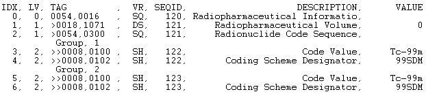

The IDLffDicomEx::AddGroup function method creates a series of repeating tags within a sequence. For example, the same set of 10 tags could be repeated 4 times in one sequence, which means the sequence would have 4 groups, each with the same 10 tags.
When calling AddGroup the DicomTag argument specifies a sequence (SQ) attribute. If the sequence does not exist, the AddGroup method creates the sequence before creating the group in this sequence. Once the group has been created, member items can be added via the IDLffDicomEx::SetValue method using the return value from this method as the SEQID value
Note: Changes are not written to the DICOM file until you call the IDLffDicomEx::Commit method. When you commit changes, all sequence identifiers are invalidated. You need to call IDLffDicomEx::GetValue to re-access the sequence identifiers. See Adding Groups to a Nested Sequence for an example.
Result = Obj ->[ IDLffDicomEx ::]AddGroup ( DicomTag [, PARENTSEQID = integer ] )
Returns a long integer containing the group identifier for the newly created group. This identifier can be used by other methods that use the SEQID keyword such as IDLffDicomEx::GetValue and IDLffDicomEx::SetValue methods.
A string that identifies the group and element of a DICOM sequence (SQ) attribute in the form 'XXXX,XXXX' . The DicomTag argument must reference a public tag that is part of the standard IOD for the image type and must be of the SQ VR type. See DICOM Attributes for a list of tags.
Set this keyword only if adding the new group to an existing sequence. Use this keyword to specify a parent sequence identifier to add the group to as follows:
The following example adds a public sequence containing three groups to the root level of a selected file. This public sequence is typically associated with Ultrasound (US) files. Use the NON-CONFORMING keyword when creating a clone in order to avoid errors encountered when attempting to add non-standard attributes to the DICOM file. The new groups within the sequence are printed to the Output Log window.
Note: For an example that adds groups to a nested sequence, see Adding Groups to a Nested Sequence .
Note: This example does not write the cloned file to memory. To write to memory, use the IDLffDicomEx::Commit method.
PRO dicom_addgroup_doc
; Select a DICOM file.
sFile = DIALOG_PICKFILE( $
PATH=FILEPATH('',SUBDIRECTORY=['examples','data']), $
TITLE='Select DICOM Patient File', FILTER='*.dcm', $
GET_PATH=path)
; Create a clone (aImgClone.dcm) of the selected file (sfile).
; Set the NON_CONFORMING keyword to be able to add a public SQ
; of repeating items typically associated with US files to
; the selected file.
oImg = OBJ_NEW('IDLffDicomEx', path + 'aImgClone.dcm', $
CLONE=sfile, /NON_CONFORMING)
; Add a public group to the root level of the file. A
; sequence with the value specified for the DICOM
; attribute is automatically created if it does not exist.
; The AddGroup calls add a Sequence of Ultrasound Regions
; (0018,6011) with 3 sets of repeating tags.
; Add two tags to each group.
groupId_1 = oImg->AddGroup('0018,6011')
oImg->SetValue,'0018,6012', 'US', 1, SEQID = groupId_1
oImg->SetValue,'0018,6014', 'US', 2, SEQID = groupId_1
groupId_2 = oImg->AddGroup('0018,6011')
oImg->SetValue,'0018,6012', 'US', 3, SEQID = groupId_2
oImg->SetValue,'0018,6014', 'US', 4, SEQID = groupId_2
groupId_3 = oImg->AddGroup('0018,6011')
oImg->SetValue,'0018,6012', 'US', 5, SEQID = groupId_3
oImg->SetValue,'0018,6014', 'US', 6, SEQID = groupId_3
; Print a range including the new tags to
; the Output Log window.
vTags = oImg->EnumerateTags(COUNT=vTagCnt, $
START_TAG='0018,6011', STOP_TAG='0020,0000')
; Format the output.
PRINT, FORMAT= $
'(%"%3s, %2s, %-12s, %3s, %5s, %30s, %8s")', $
'IDX', 'LVL', 'TAG', 'VR', 'SEQID', $
'DESCRIPTION', 'VALUE'
; Cycle through the tags.
FOR xx = 0, vTagCnt-1 DO BEGIN
; If the item is nested within another item, indicate the
; level using > symbol.
IF (vTags[xx].Level GT 0) THEN BEGIN
vLvl = STRJOIN(REPLICATE('>',vTags[xx].Level))
vtg = vLvl + vTags[xx].Tag
ENDIF ELSE BEGIN
vtg = vTags[xx].Tag
ENDELSE
; If the tags are in a group, indicate this.
IF (vTags[xx].GroupNum GT 0) THEN BEGIN
PRINT, FORMAT='(%"%15s, %1d")', 'Group', vTags[xx].GroupNum
ENDIF
; Print the fields of the structure.
PRINT, FORMAT = $
'(%"%3d, %2d, %-12s, %3s, %5d, %30s, %8s")', $
xx, vTags[xx].Level, vtg,vTags[xx].VR, vTags[xx].SeqId, $
vTags[xx].Description, vTags[xx].Value
ENDFOR
; Clean up references.
OBJ_DESTROY, oImg
END
This program generates the following output. A root-level sequence (SQ) attribute (0018,6011) and three sets of repeating tags are added to the file.
The following example adds two groups to a nested sequence by first adding a sequence (‘0054,0016’) to the root level of the cloned file. The code then adds an attribute (‘0018,1071’) to the sequence. Another sequence (‘0054,0300’) is added to the root level sequence using the IDLffDicomEx::AddGroup method.
After adding the first set of repeating tags, call the IDLffDicomEx::Commit method to save the changes. Before you can add a second group of tags, you need to retrieve sequence identifiers. After returning the sequence identifier using IDLffDicomEx::GetValue , add the second group of tags. The root sequence is defined as the PARENTSEQID of the two groups.
Note: You do not have to call Commit after adding the first group of tags. This example calls Commit at this point simply to illustrates re-accessing the sequence identifier reference, which is lost when Commit is called.
Use the NON-CONFORMING keyword when creating a clone in order to avoid errors encountered when attempting to add non-standard attributes to the DICOM file. The new sequences and groups are printed to the Output Log window.
PRO dicom_addgrouptonestedseq_doc
; Select a DICOM file.
sFile = DIALOG_PICKFILE( $
PATH=FILEPATH('',SUBDIRECTORY=['examples','data']), $
TITLE='Select DICOM Patient File', FILTER='*.dcm', $
GET_PATH=path)
; Create a clone (aImgClone.dcm) of the selected file (sfile).
; Set the NON_CONFORMING keyword to be able to add a public SQ
; of radiopharmaceutical items to any file.
oImg = OBJ_NEW('IDLffDicomEx', path + 'aImgClone.dcm', $
CLONE=sfile, /NON_CONFORMING)
; Add a sequence; Radiopharmaceutical Information Sequence.
vRootSeq = oImg->AddSequence('0054,0016')
; Add an attribute within the sequence.
oImg->SetValue, '0018,1071', 'DS', '0', SEQID=vRootSeq
; Add two hypothetical groups to the nested sequence,
; (0054,0300), the Radionuclide Code Sequence. Calling AddGroup
; with this sequence specified adds the sequence. Add two groups,
; each consisting of two tags. The parent sequence of the repeating
; tags (which are contained within a sequence) is the root
; sequence.
groupId_1 = oImg->AddGroup('0054,0300', PARENTSEQID=vRootSeq)
oImg->SetValue,'0008,0100', 'SH', 'Tc-99m', SEQID = groupId_1
oImg->SetValue,'0008,0102', 'SH', '99SDM', SEQID = groupId_1
; Commit the changes.
oImg->Commit
; After committing changes you must re-access any sequence
; identifiers. Failure to do so will cause an error.
vNewSeqid = oImg->GetValue('0054,0016')
groupId_2 = oImg->AddGroup('0054,0300', PARENTSEQID=vNewSeqid)
oImg->SetValue,'0008,0100', 'SH', 'Tc-99m', SEQID = groupId_2
oImg->SetValue,'0008,0102', 'SH', '99SDM', SEQID = groupId_2
; Print a range including the new tags to
; the Output Log window.
vTags = oImg->EnumerateTags(COUNT=vTagCnt, $
START_TAG='0054,0016', STOP_TAG='0056,0000')
; Format the output.
PRINT, FORMAT= $
'(%"%3s, %2s, %-12s, %3s, %5s, %30s, %10s")', $
'IDX', 'LVL', 'TAG', 'VR', 'SEQID', $
'DESCRIPTION', 'VALUE'
; Cycle through the tags.
FOR xx = 0, vTagCnt-1 DO BEGIN
; If the item is nested within another item, indicate the
; level using > symbol.
IF (vTags[xx].Level GT 0) THEN BEGIN
vLvl = STRJOIN(REPLICATE('>',vTags[xx].Level))
vtg = vLvl + vTags[xx].Tag
ENDIF ELSE BEGIN
vtg = vTags[xx].Tag
ENDELSE
; If the tags are in a group, indicate this.
IF (vTags[xx].GroupNum GT 0) THEN BEGIN
PRINT, FORMAT='(%"%15s, %1d")', 'Group', vTags[xx].GroupNum
ENDIF
; Print the fields of the structure.
PRINT, FORMAT = $
'(%"%3d, %2d, %-12s, %3s, %5d, %30s, %10s")', $
xx, vTags[xx].Level, vtg, vTags[xx].VR, vTags[xx].SeqId, $
vTags[xx].Description, vTags[xx].Value
ENDFOR
; Clean up references.
OBJ_DESTROY, oImg
; Delete the file to avoid duplicate file name errors when running
; example multiple times.
FILE_DELETE, path + 'aImgClone.dcm', /ALLOW_NONEXISTENT
END
This produces the following output. Notice that sequence (0054,0300) is nested inside sequence (0054,0016).

|
6.1 |
Introduced |